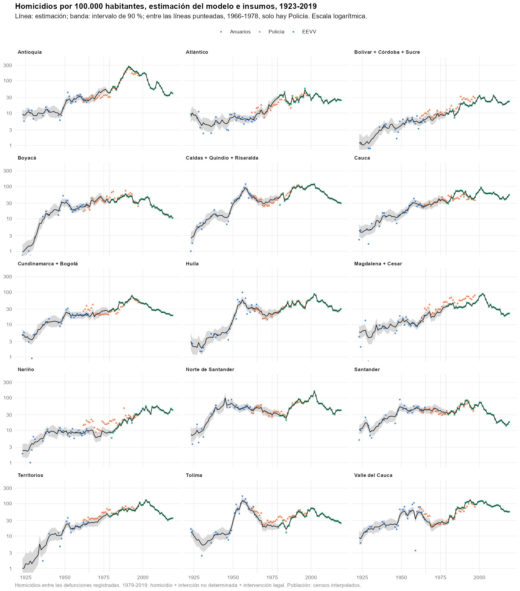
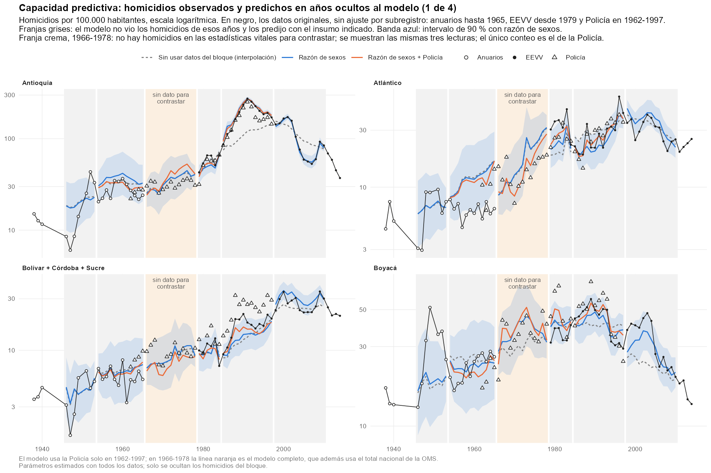
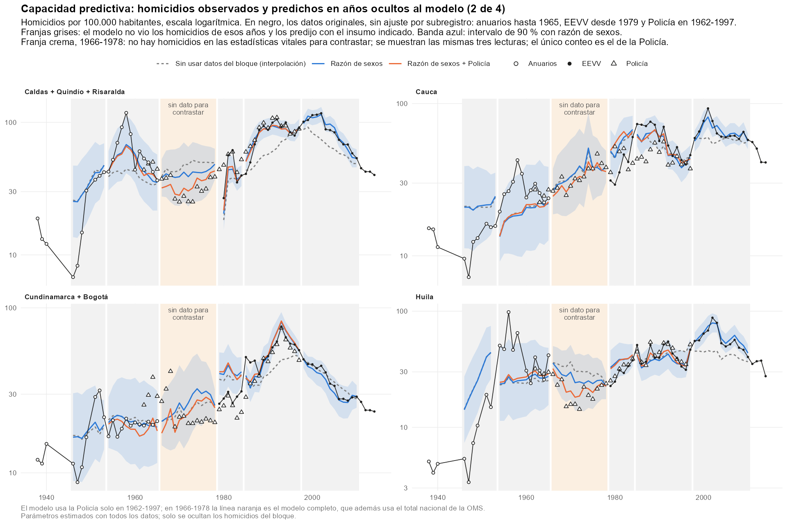
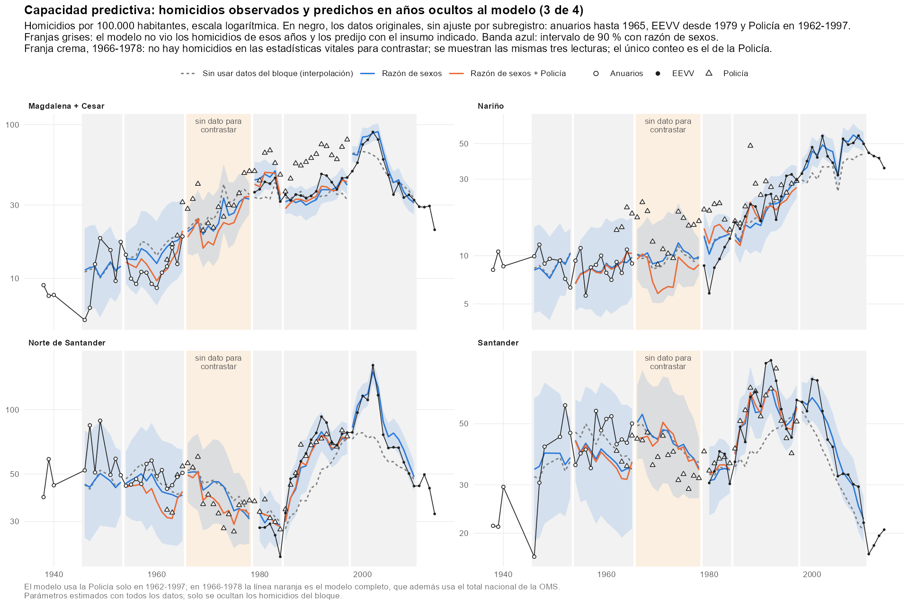
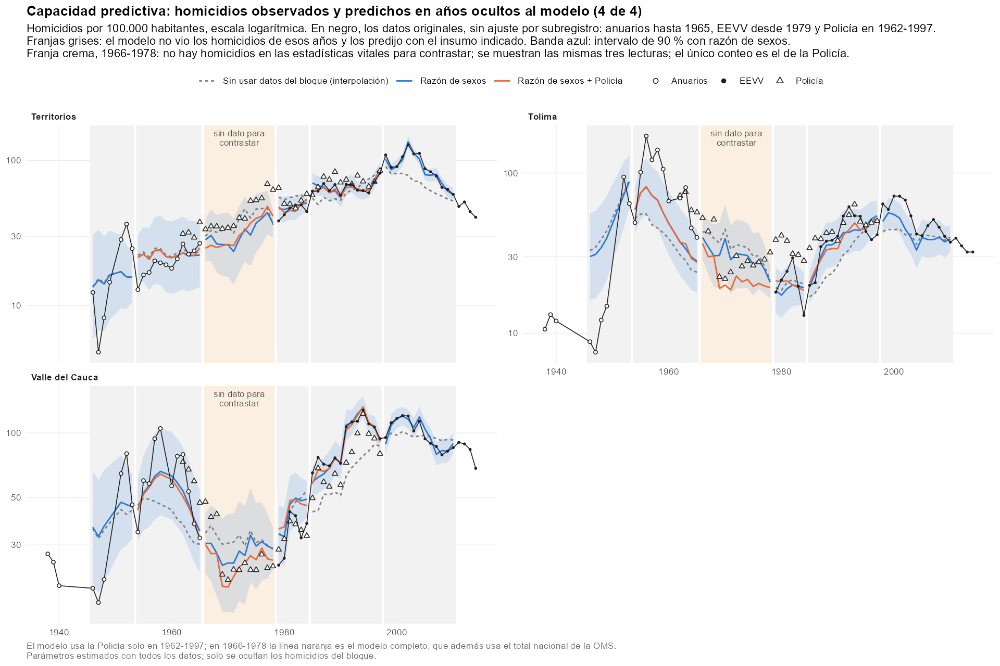
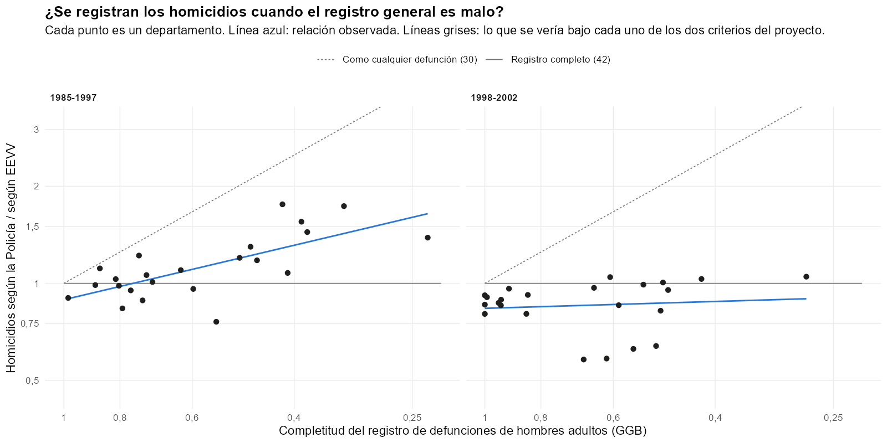
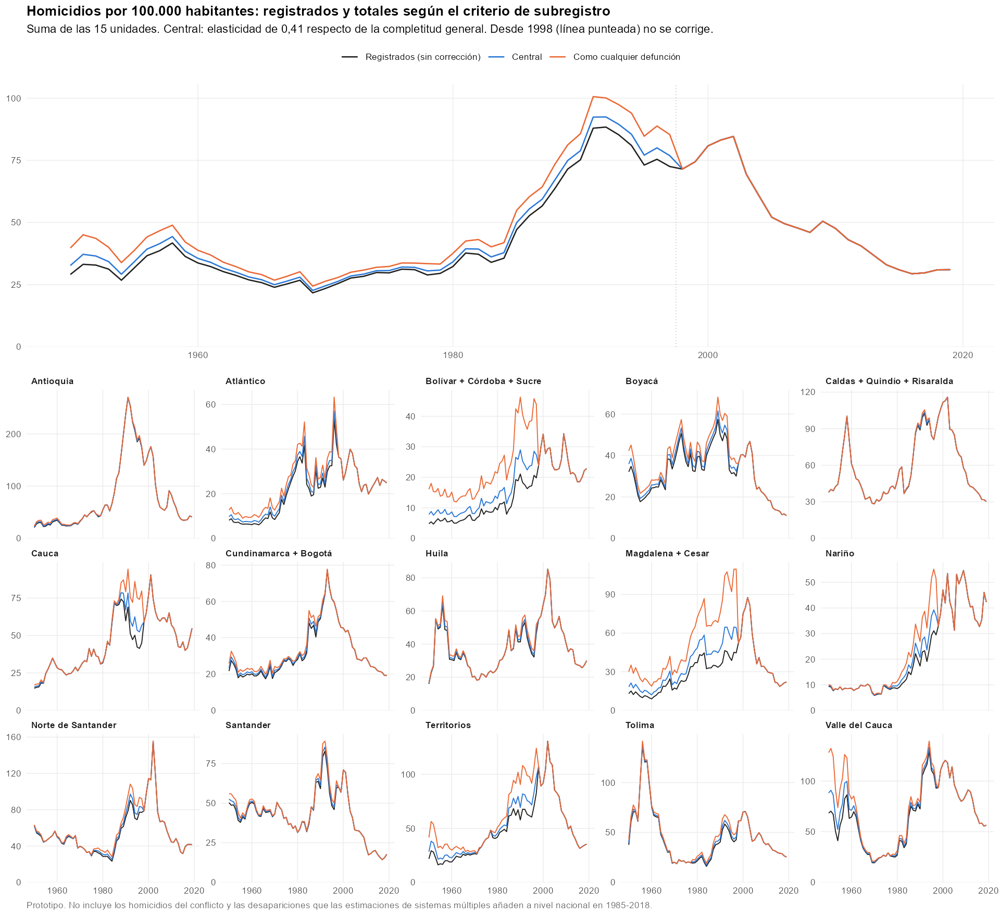

2026-11-12
Estado: prototipo. Describe el modelo tal como está en code/45_homicide_backcast_dept.R y los dos pasos que se apoyan en él: code/47_homicide_underregistration.R (de homicidios registrados a totales) y code/46_homicide_munic_1958_1960.R (reparto municipal de 1958-1960). Las cifras son las de las tablas de output/tables/ a la fecha del documento.
Cerca de nueve de cada diez víctimas de homicidio son hombres. Las demás causas de muerte se reparten entre hombres y mujeres de forma mucho más pareja. Por eso, cuando en un lugar aumentan los homicidios, las defunciones masculinas crecen más que las femeninas y la razón entre unas y otras sube, aunque nadie haya anotado la causa de muerte.
Esto se puede escribir como una identidad contable. Las defunciones de cada sexo son la suma de las no violentas y las violentas:
| Símbolo | Significado |
|---|---|
| , | defunciones registradas de hombres (masculinas) y de mujeres (femeninas), por todas las causas |
| , | defunciones no violentas de hombres y de mujeres |
| homicidios | |
| proporción de los homicidios cuyas víctimas son hombres. Se fija en 0,90; en los datos va de 0,87 a 0,92 |
La razón de sexos de las defunciones es . Para ver cómo depende de los homicidios conviene definir dos cantidades:
Con ellas, la identidad de arriba se convierte en:
Esta fórmula no es un supuesto estadístico: es aritmética. Dice cuánto vale la razón de sexos observada si se conocen la razón no violenta y la proporción de homicidios. El modelo la usa al revés: observa y trata de deducir .
Ejemplo. Con una razón no violenta de 1,05:
| Homicidios como % de las defunciones | Razón de sexos resultante |
|---|---|
| 0 % | 1,05 |
| 1 % | 1,07 |
| 3 % | 1,10 |
| 15 % | 1,33 |
El ejemplo muestra el límite de la idea. En la Colombia de 1985-1997 los homicidios eran cerca del 15 % de las defunciones y movían la razón de sexos de 1,05 a 1,33: una señal enorme. En 1923-1965 eran entre 0,4 % y 3 %, y la movían de 1,05 a 1,10 como mucho. La razón de sexos de un departamento cambia de un año a otro entre 2 % y 5 % por motivos que nada tienen que ver con la violencia, así que una señal de ese tamaño queda tapada por el ruido.
Varios departamentos se crearon después de 1950 a partir de otros. Para que las series no se rompan, se agrupan con su departamento de origen:
| Fuente | Años | Qué aporta | Celdas unidad-año |
|---|---|---|---|
| Defunciones por sexo: anuarios hasta 1978, EEVV desde 1979 | 1915-2019 | la razón de sexos | 1.525 |
| Homicidios de los anuarios estadísticos | 1923-1965, con huecos | conteo de homicidios en las estadísticas vitales | 417 |
| Homicidios de la Policía Nacional | 1962-1997 | conteo independiente del registro de defunciones | 540 |
| Muertes violentas de EEVV (microdatos) | 1979-2019 | conteo de homicidios en las estadísticas vitales | 612 |
| Muertes violentas de la OMS | 1966-1977 | solo el total nacional | 9 años |
Tres precisiones:
Es un modelo de espacio de estados, también llamado modelo de estados latentes. La idea es sencilla:
Es la misma familia de modelos que se usa para seguir la posición de un vehículo con un GPS impreciso: se sabe que el vehículo no salta de un sitio a otro, y cada lectura del GPS corrige un poco la posición estimada.
Para cada unidad y cada año el modelo lleva tres estados:
| Estado | Qué es |
|---|---|
| logaritmo de la proporción de homicidios en las defunciones registradas: . Es lo que se quiere estimar | |
| cuánto se aparta la razón de sexos no violenta de la unidad de la nacional, en logaritmos | |
| sesgo de la Policía: logaritmo de la razón entre lo que cuenta la Policía y lo que cuentan las estadísticas vitales |
Se trabaja en logaritmos porque así un cambio de 0,10 significa siempre “cerca de 10 %”, sea cual sea el nivel, y porque la proporción nunca puede resultar negativa.
Los tres evolucionan como una caminata aleatoria: el valor de un año es el del año anterior más un cambio pequeño e impredecible.
Cada es un número al azar con media cero y una desviación estándar propia: , y . Esas desviaciones dicen cuánto puede moverse cada estado en un año. Por ejemplo, significa que la proporción de homicidios cambia típicamente un 17 % de un año al siguiente. El modelo las estima a partir de los datos.
La razón de sexos no violenta de la unidad se arma con dos piezas:
es el logaritmo de la razón de sexos no violenta del país en el año . No es un estado: se calcula antes, a partir de las defunciones nacionales por sexo y de la proporción nacional de muertes violentas (anuarios, OMS y EEVV según el año). Recoge la tendencia común a todo el país, que es fuerte: la razón de sexos de las defunciones pasa de 1,04 en los años veinte a 1,29 en los ochenta por razones ajenas a la violencia. Al estado le queda solo lo propio de cada unidad.
En lo que sigue, son las defunciones registradas de la unidad en el año, y cada es el error de medición de esa fuente.
Anuarios. Si es el número de homicidios que publica el anuario:
El anuario mide directamente la proporción de homicidios, con un error de desviación estándar .
EEVV. Igual, con las muertes violentas de los microdatos:
Aquí el error se fija en un valor muy pequeño (0,03): las EEVV son la definición de lo que se quiere medir, así que la estimación en esos años coincide casi exactamente con el dato.
Policía. Con homicidios de la Policía:
La Policía mide la misma proporción, desplazada por su sesgo . El sesgo se aprende en los años en que la Policía coincide con los anuarios (1962-1965) o con EEVV (1979-1997), y se proyecta a los años intermedios.
Razón de sexos. Es la identidad contable de la sección 2, escrita con los estados:
es el logaritmo de la fórmula de de la sección 2, con y . Es la única relación del modelo que no es una simple suma.
Total nacional de la OMS. Si son las muertes violentas del país según la OMS y las defunciones nacionales:
es el peso de la unidad en las defunciones del país. La ecuación dice que la proporción nacional es el promedio ponderado de las proporciones de las unidades. Es lo único que liga unas unidades con otras, y solo se usa en 1966-1977: en 1953-1965 la serie de la OMS es la suma de los mismos anuarios que ya están en el modelo.
El tamaño de los errores. Cada error tiene dos partes. Una es propia de la fuente ( para los anuarios, para la Policía, para la razón de sexos) y el modelo la estima. La otra es el azar de contar pocos casos: con 20 homicidios, uno más o uno menos cambia el resultado un 5 %; con 2.000, no se nota. Esa segunda parte se calcula con el propio conteo (vale para un conteo , y para la razón de sexos), de modo que las unidades pequeñas pesan menos.
Algunas celdas de los anuarios están mal. Valle del Cauca en 1959 aparece con 52 homicidios, entre 1.479 el año anterior y 855 el siguiente; Antioquia en 1923, con 3. Si el modelo tratara todas las celdas igual, esas pocas lo obligarían a suponer que todos los anuarios son muy imprecisos, y entonces suavizaría los picos de La Violencia como si fueran ruido. Eso ocurría en la primera versión.
Para evitarlo, cada celda de anuario puede ser de tres tipos:
| Tipo | Qué supone el modelo | Probabilidad estimada |
|---|---|---|
| Regular | la celda mide bien, con el error normal | 95,7 % |
| Error grosero | la celda está mal: su error es mucho mayor (desviación estándar adicional de 1,5 en logaritmos) | 3,2 % |
| Salto | la celda está bien y fue el nivel de homicidios el que cambió bruscamente respecto del año anterior | 1,1 % |
El modelo no decide a mano cuál es cuál. Para cada celda calcula qué tan compatible es con cada tipo, dado lo que ya sabe de ese año por las demás fuentes y por los años vecinos, y pondera las tres lecturas. De las 417 celdas, nueve quedan leídas como error grosero con probabilidad mayor de 50 %:
| Unidad | Año | Anuario | Estimación del modelo |
|---|---|---|---|
| Antioquia | 1923 | 3 | 86 |
| Valle del Cauca | 1959 | 52 | 922 |
| Santander | 1949 | 643 | 371 |
| Valle del Cauca | 1949 | 670 | 611 |
| Tolima | 1951 | 365 | 437 |
| Huila | 1953 | 182 | 171 |
| Huila | 1959 | 77 | 112 |
| Nariño | 1930 | 26 | 17 |
| Territorios | 1940 | 36 | 25 |
Las dos primeras son errores evidentes. Santander y Valle en 1949 probablemente no lo son: es el arranque de La Violencia, y el modelo lo confunde con un error porque en 1950 no hay dato que lo confirme.
El procedimiento se llama filtro de Kalman y tiene dos pasadas:
Se le dice filtro de Kalman extendido porque la relación de la razón de sexos () no es una suma simple y hay que aproximarla en cada paso por una recta.
Las 15 unidades se estiman a la vez, porque el total de la OMS las liga. Son 45 estados por año (tres por unidad).
Las desviaciones estándar y las dos probabilidades se eligen por máxima verosimilitud: se toman los valores con los que los datos observados resultan más probables. Con esos valores fijos se hacen las dos pasadas.
Las desviaciones de , de y de la razón de sexos tienen un valor antes de 1979 y otro desde 1979, porque con los microdatos de EEVV el comportamiento cambia.
| Parámetro | Valor | Lectura |
|---|---|---|
| , antes de 1979 | 0,168 | la proporción de homicidios cambia típicamente 17 % por año |
| , desde 1979 | 0,140 | 14 % por año |
| , antes de 1979 | 0,011 | la razón de sexos no violenta de una unidad deriva cerca de 1 % por año respecto de la nacional |
| , desde 1979 | 0,008 | algo menos |
| , antes de 1979 | 0,021 | la razón de sexos tiene un ruido propio de 2 % que la violencia no explica |
| , desde 1979 | 0,0003 | prácticamente ninguno: con buenos datos la identidad contable se cumple casi exacta |
| 0,133 | una celda regular de anuario se aparta 13 % del valor estimado | |
| 0,056 | ruido de la Policía de un año a otro, una vez descontado su sesgo | |
| 0,111 | el sesgo de la Policía cambia hasta 11 % por año: es inestable | |
| Probabilidad de error grosero | 0,032 | una de cada 31 celdas de anuario |
| Probabilidad de salto | 0,011 | una de cada 95 |
Valores fijados, no estimados: ; error de EEVV 0,03; error del total de la OMS 0,05; desviación adicional de un error grosero 1,5 y de un salto 1,0.
Dos de estos números resumen el resultado. El ruido de la razón de sexos antes de 1979 (0,021) es del mismo tamaño que la señal que producen homicidios de 1 % a 3 % de las defunciones, y por eso la razón de sexos informa poco en ese periodo. Y la inestabilidad del sesgo de la Policía (0,111 por año) es la razón de que el tramo 1966-1978 tenga intervalos anchos aunque haya dato policial todos los años.
Tratar las celdas de anuario como posibles errores mejora mucho el ajuste: la log-verosimilitud pasa de 3.081,8 a 3.140,1 con dos parámetros más.
Para cada unidad y año:
La incertidumbre depende de qué fuentes hay cada año:
| Periodo | Fuentes de homicidio | Desviación estándar típica de |
|---|---|---|
| 1915-1922 | ninguna | 0,47 |
| 1923-1945 | anuarios, con huecos | 0,24 |
| 1946-1965 | anuarios (y Policía desde 1962) | 0,13 |
| 1966-1978 | Policía y total de la OMS | 0,16 |
| 1979-1984 | EEVV y Policía | 0,05 |
| 1985-2019 | EEVV | 0,04 |
Una desviación de 0,16 equivale a un intervalo de 90 % de más o menos 26 %.

Que el modelo siga los datos que ve no prueba nada. La prueba es ocultarle los homicidios de un bloque de años y pedirle que los prediga con lo que le queda. Se hizo con cinco bloques y tres conjuntos de insumos dentro del bloque: ninguno (el modelo solo interpola entre los años vecinos), la razón de sexos, y la razón de sexos más la Policía.
Error absoluto mediano de la predicción, en las 15 unidades:
| Bloque oculto | Sin insumos | Razón de sexos | Razón de sexos + Policía |
|---|---|---|---|
| 1946-1953 | 41 % | 40 % | no hay Policía |
| 1954-1965 | 23 % | 22 % | 21 % |
| 1979-1984 | 20 % | 20 % | 18 % |
| 1985-1997 | 20 % | 9 % | 7 % |
| 1998-2010 | 16 % | 7 % | no se usa Policía |
La tabla repite la prueba unidad por unidad. Cada celda de error trae dos números: el error absoluto mediano sin insumos en el bloque y con la razón de sexos. La cobertura es el porcentaje de valores observados que cae dentro del intervalo de 90 % de la predicción con razón de sexos, en los cinco bloques; lo esperable es 90 %.
| Unidad | Homicidios como % de las defunciones, 1946-1965 | Error 1946-1965: sin insumos / razón de sexos | Error 1979-1984: sin insumos / razón de sexos | Homicidios como % de las defunciones, 1985-2010 | Error 1985-2010: sin insumos / razón de sexos | Cobertura del intervalo de 90 % |
|---|---|---|---|---|---|---|
| Antioquia | 1,9 % | 36 % / 42 % | 13 % / 10 % | 23,2 % | 30 % / 3 % | 82 % |
| Atlántico | 0,7 % | 85 % / 81 % | 40 % / 30 % | 7,0 % | 14 % / 11 % | 75 % |
| Bolívar + Córdoba + Sucre | 0,9 % | 21 % / 23 % | 12 % / 11 % | 8,2 % | 15 % / 16 % | 94 % |
| Boyacá | 2,0 % | 24 % / 21 % | 14 % / 17 % | 7,0 % | 20 % / 13 % | 88 % |
| Caldas + Quindío + Risaralda | 3,3 % | 31 % / 22 % | 31 % / 22 % | 14,4 % | 22 % / 5 % | 86 % |
| Cauca | 1,5 % | 34 % / 35 % | 47 % / 52 % | 15,5 % | 12 % / 8 % | 84 % |
| Cundinamarca + Bogotá | 1,7 % | 10 % / 7 % | 28 % / 43 % | 9,6 % | 14 % / 6 % | 82 % |
| Huila | 2,4 % | 54 % / 54 % | 27 % / 27 % | 10,2 % | 19 % / 9 % | 84 % |
| Magdalena + Cesar | 1,8 % | 45 % / 34 % | 10 % / 12 % | 15,8 % | 10 % / 10 % | 94 % |
| Nariño | 0,6 % | 17 % / 18 % | 43 % / 41 % | 9,5 % | 16 % / 11 % | 96 % |
| Norte de Santander | 3,6 % | 11 % / 12 % | 21 % / 13 % | 15,3 % | 20 % / 9 % | 94 % |
| Santander | 3,1 % | 18 % / 19 % | 12 % / 12 % | 9,4 % | 20 % / 7 % | 90 % |
| Territorios | 2,5 % | 23 % / 19 % | 19 % / 7 % | 23,4 % | 15 % / 4 % | 94 % |
| Tolima | 4,9 % | 60 % / 49 % | 14 % / 21 % | 9,2 % | 26 % / 18 % | 57 % |
| Valle del Cauca | 4,3 % | 38 % / 27 % | 34 % / 29 % | 17,1 % | 17 % / 3 % | 86 % |
| Las 15 unidades | 29 % / 26 % | 20 % / 20 % | 18 % / 8 % |
Qué se lee en la tabla:
La tabla se calcula con output/tables/homicide_backcast_validation_predictions.csv, que trae cada predicción por bloque, insumo, unidad y año.
Las cuatro figuras siguientes muestran la prueba para las 15 unidades. En cada panel:




Tres más:
El modelo estima homicidios entre las defunciones registradas. Cuántos no se registraron lo aborda code/47_homicide_underregistration.R.
La Policía cuenta homicidios sin depender del registro de defunciones. Si los homicidios se registraran siempre, la razón Policía/EEVV no dependería de qué tan bueno es el registro general de un departamento. Si se perdieran como cualquier otra muerte, se movería uno a uno con él. Entre departamentos:

| Símbolo | Significado |
|---|---|
| homicidios totales de la unidad en el año | |
| homicidios registrados, estimados por el modelo de la sección 4 | |
| completitud del registro de defunciones no violentas de la unidad: fracción de esas muertes que llega a registrarse (entre 0 y 1) | |
| elasticidad: qué tanto del subregistro general afecta también a los homicidios |
Con los homicidios no se corrigen; con se corrigen igual que las demás muertes. Hay tres escenarios:
| Escenario | Factor nacional, 1950-1997 | Bolívar + Córdoba + Sucre | Magdalena + Cesar | |
|---|---|---|---|---|
| Sin corrección (criterio del script 42) | 0 | 1,00 | 1,00 | 1,00 |
| Central | 0,41 | 1,03 a 1,12 | 1,40 | 1,38 |
| Como cualquier defunción (criterio del script 30) | 1 | 1,08 a 1,35 | 2,27 | 2,22 |
Desde 1998 los tres escenarios son el conteo registrado.
La completitud por departamento no existía antes de 1985. Se construyó un índice para 1950-1997 comparando las defunciones no violentas registradas en cada unidad con las que cabría esperar dadas las tasas nacionales ajustadas (script 42), la estructura por edad de los censos de 1938, 1951 y 1964, y el nivel de mortalidad de cada unidad según las tablas de vida de DANE de 1985-1990.
Dos señales respaldan el escenario central:

La razón de sexos de las defunciones registradas solo informa sobre los homicidios que están dentro de esas mismas defunciones. Se comprobó qué pasa si se ajusta todo antes de estimar: el total nacional de 1950-1997 cambia 0,1 %, y cada unidad menos de 1 %. Los dos caminos son equivalentes; el actual es más simple.
No hay homicidios por municipio antes de 1979. code/46_homicide_munic_1958_1960.R reparte los homicidios de cada unidad entre sus municipios para 1958-1960, los únicos años de ese periodo con defunciones municipales por sexo, con los tres años juntos.
Para cada municipio se calcula el exceso de muertes masculinas sobre lo que daría la razón de sexos no violenta:
y son las defunciones de hombres y mujeres de un año de edad o más (las de menores de un año se descuentan porque no llevan señal de homicidio). es la razón de sexos no violenta esperada en el municipio. Es la misma identidad contable de la sección 2, despejada para los homicidios.
Ese exceso es muy ruidoso en municipios pequeños, así que se combina con un reparto simple por población:
El peso va de 0 a 1 y es mayor cuanto más grande es el municipio y más violenta su unidad. En promedio es 0,42 en Tolima, 0,28 en Caldas, 0,18 en Valle y menos de 0,15 en el resto.
Como no hay dato de la época para validarlo, el método se calibró en EEVV, reduciendo artificialmente los homicidios modernos al nivel de 1958-1960. En esas condiciones, la proporción de homicidios asignada al municipio equivocado baja de 20,5 % a 18,6 %.
| Qué | Archivo |
|---|---|
| Modelo departamental | code/45_homicide_backcast_dept.R |
| Reparto municipal 1958-1960 | code/46_homicide_munic_1958_1960.R |
| De registrados a totales | code/47_homicide_underregistration.R |
| Estimaciones por unidad y año | output/tables/homicide_backcast_dept_1915-2019.csv |
| Parámetros | output/tables/homicide_backcast_parameters.csv |
| Validación por bloques | output/tables/homicide_backcast_validation.csv y homicide_backcast_validation_predictions.csv |
| Homicidios totales por escenario | output/tables/homicide_total_dept_1950-2019.csv |
| Índice de completitud | output/tables/homicide_underreg_completeness_index.csv |
| Reparto municipal | output/tables/homicide_munic_1958-1960.csv |
| Figuras | figures/07_backcast/ |
| Símbolo | Significado |
|---|---|
| , | unidad territorial y año |
| , , | defunciones registradas: total, de hombres y de mujeres |
| , | defunciones no violentas de hombres y de mujeres |
| homicidios registrados | |
| proporción de homicidios en las defunciones, | |
| proporción de víctimas de homicidio que son hombres (0,90) | |
| razón de sexos de las defunciones, | |
| razón de sexos no violenta, | |
| logaritmo de la razón de sexos no violenta del país | |
| estado: | |
| estado: desvío de la unidad respecto de | |
| estado: sesgo de la Policía, en logaritmos | |
| función que da el logaritmo de a partir de y | |
| , , | homicidios según los anuarios, EEVV y la Policía |
| muertes violentas del país según la OMS | |
| peso de la unidad en las defunciones del país | |
| desviación estándar de un cambio anual o de un error de medición | |
| completitud del registro de defunciones no violentas | |
| elasticidad del subregistro de homicidios respecto del general | |
| homicidios totales |